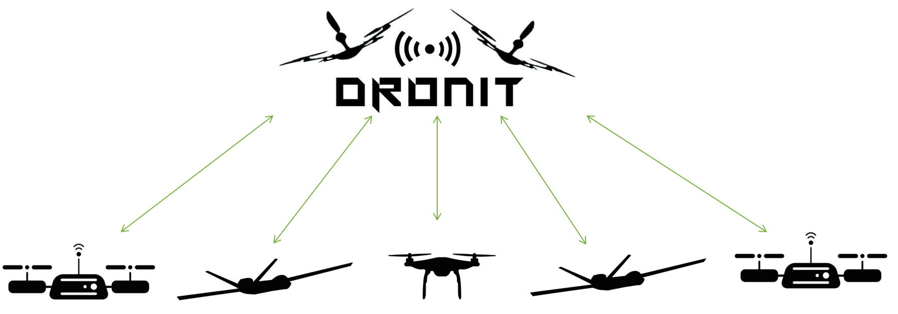
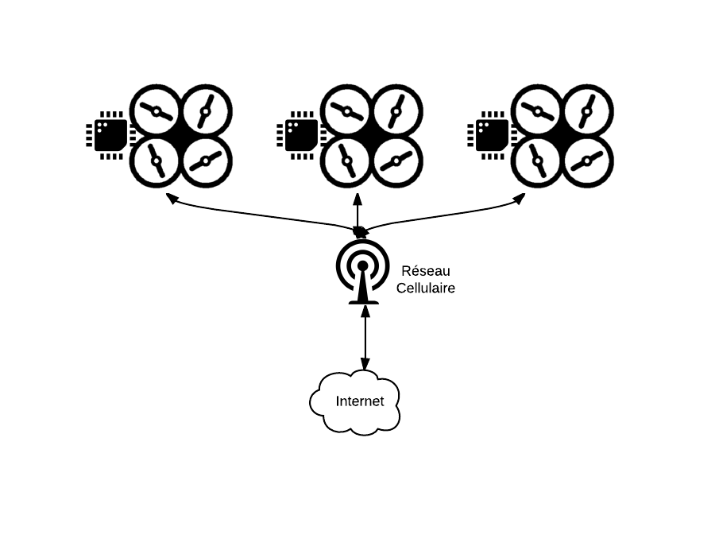
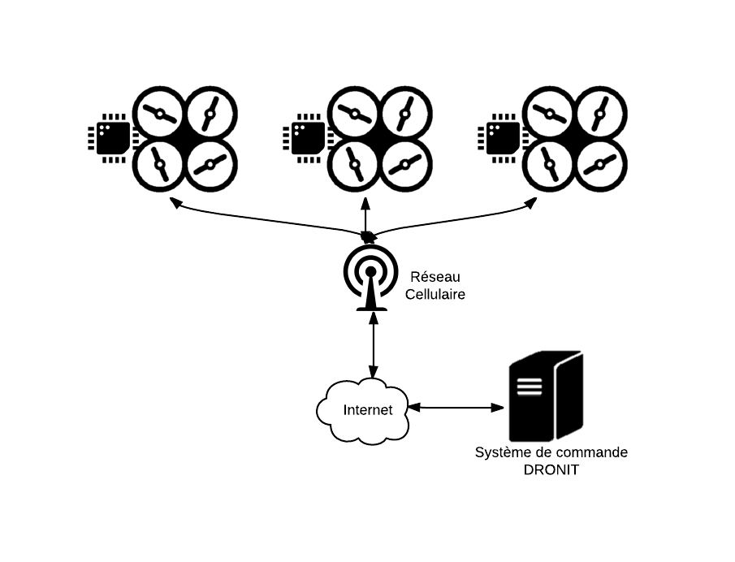

DRONIT
Par Mohamed Baghdadi,
Guillaume Carnoy,
Michel Chevalier,
Rémi Honoré,
Jimmy Lucidarme,
Rémi Sultan &
Alexandre Theve
C'est lors du :
qu'ils ont eu une idée :
Mohamed
Baghdadi
Guillaume
Carnoy
Michel
Chevalier
Rémi
Honoré
Jimmy
Lucidarme
Rémi
Sultan
Alexandre
Theve
Formation d'une équipe
Développement du prototype
Présentation du produit
Constat :
De plus en plus d'entreprises utilisent les drones pour faire de la surveillance d'infrastructure ou de la maintenance.
Nos trois objectifs
- Passer d'une intelligence unitaire à une intelligence collective
- Mise en réseau des drones
- Travail coordonné
Notre Solution
Fonctionnement
Architecture
Architecture
Architecture
Architecture
Clientèle ciblée
Enjeux pour l'assurance
Avantages des drones pour le secteur des assurances :
- Réduction des risques (employés et usagers)
- Meilleur entretien des infrastructures
- Amélioration de la longévité des infrastructures
Opportunités pour le secteur de l’assurance :
- Mise en place d’offres adaptées pour l’émergence du marché des drones civils pour les particuliers et professionnels en cas d’accident.
Et après le Startup Weekend ?
- Soutien technique du Centre De Service (CDS) de Davidson
- Contribution technique de François Poiré & Nicolas Doby
- Avancement dans le développement
- Soutien financier de Davidson
- Financement des deux drones utilisés pour la démonstration
Remerciements

Merci pour votre attention !
L'équipe DRONIT
Mohamed Baghdadi,
Guillaume Carnoy,
Michel Chevalier,
Rémi Honoré,
Jimmy Lucidarme,
Rémi Sultan &
Alexandre Theve